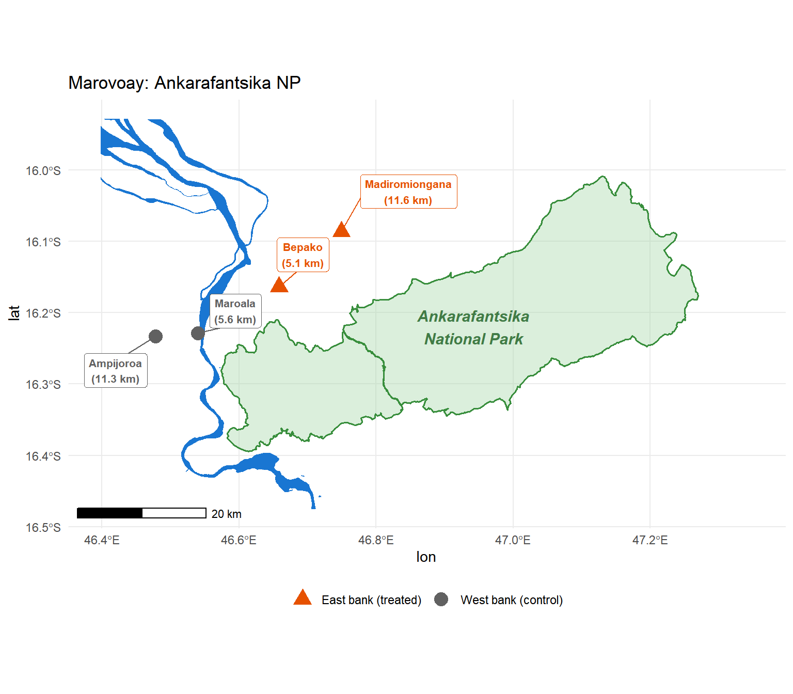
6 Conservation Governance and Household Income: Five Observatories
Extending the Strict vs. Multipurpose Analysis to Farafangana, Toliara North, and Fénérive East
7 Introduction
Chapter 12 estimated the income effects of two contrasting conservation governance models in rural Madagascar using the generalized synthetic control method (Xu 2017): strict enforcement at Ankarafantsika National Park (IUCN II, treated from 2003) produced a persistent negative income effect, while participatory conservation at Lac Alaotra (IUCN V, treated from 2008) showed no statistically significant effect. Both findings rest on a two-case comparison, which limits the external validity of the strict/multipurpose contrast.
This chapter extends the analysis to three additional rural observatories that, as documented in the donor pool validity audit (Chapter 13), are themselves adjacent to PAs created during the 1999–2014 study period:
- Farafangana (15): adjacent to the Corridor Forestier Ambositra-Vondrozo (IUCN V, September 2006), a large highland conservation corridor managed under a light-touch regulatory model. Survey coverage: 1999–2008 (3 post-treatment years).
- Toliara North (23): adjacent to Amoron’i Onilahy (IUCN V, January 2007), Mikea National Park (IUCN II, April 2007), and Ranobe PK 32 (IUCN V, December 2008) — a cascade of coastal and dry-forest protections. Survey coverage: 1999–2014 (8 post-treatment years).
- Fénérive East (24): adjacent to the Réserve de Tampolo (IUCN IV, August 2007), a small research forest managed by a university institution. Survey coverage: 1999–2014 (8 post-treatment years).
These three observatories move from being liabilities in the donor pool validity analysis to informative treated units in this extended comparison. Together with Marovoay and Alaotra, they enable a five-case examination of how conservation governance type, enforcement intensity, and PA size shape household income outcomes.
A critical methodological change from Chapter 12: the donor pool here is restricted to the five clean observatories identified in Chapter 13 (Antsirabe, Tsiroanomandidy, Ambovombe, Mahanoro, Itasy). This excludes the four contaminated donors used in Chapter 12. The resulting donor pool is smaller but free of PA exposure during the study period. Marovoay and Alaotra estimates reported in this chapter will therefore differ slightly from Chapter 12.
8 Study Sites
8.1 Ankarafantsika National Park and the Marovoay Observatory
See Chapter 12, §2.1 for a full description. Briefly: Ankarafantsika National Park (136,500 ha, IUCN II) was reclassified in 2002 from a loosely enforced forest reserve to a strictly patrolled national park. The Betsiboka River separates the two treated fokontany (Bepako and Madiromiongana, east bank) from two control communities (Ampijoroa and Maroala, west bank). We treat from 2003 — the first full survey year after Decree 2002-798. Treatment assignment is validated by a 2025 resurvey showing sharply higher PA interaction rates on the east bank.
8.2 Lac Alaotra Protected Landscape and the Alaotra Observatory
See Chapter 12, §2.2 for a full description. Briefly: the Lac Alaotra PHP (425 km², IUCN V) enforces CBNRM from 2008 under Durrell’s management. The entire observatory is aggregated into a single treated unit because all seven fokontany depend on the lake-marsh ecosystem with no access-barrier equivalent to Marovoay’s Betsiboka River. A 2025 resurvey confirms uniform PA interaction across sites (37–54% visitation), validating the observatory-level treatment assignment.
8.3 Corridor Forestier Ambositra-Vondrozo and the Farafangana Observatory
The Corridor Forestier Ambositra-Vondrozo (CFAV; IUCN V) is a ~300 km Protected Landscape running along the eastern highland escarpment. A temporary protection decree (arrêté interministériel) was issued on 15 September 2006 (WDPA 555697881), designating the CFAV as part of the post-2003 SAPM expansion. Category V status implies land-use regulation at the forest margin — primarily restrictions on slash-and-burn agriculture (tavy) and charcoal production in buffer zones — rather than exclusionary enforcement. Communities retain legal access to traditional agricultural land.
The Farafangana observatory lies on the southeastern coastal plain, separated from the highland interior by an escarpment. Its nearest commune (Mahatsinjo) borders the CFAV at approximately 14 km. A complication: Manombo Special Reserve (IUCN IV, 1962) lies approximately 12 km from a second Farafangana commune. Manombo predates the study period and its boundaries and management regime were unchanged across 1999–2014; it constitutes a constant background condition absorbed into the unit fixed effect rather than a within-period treatment event. The estimated ATT for Farafangana therefore identifies the additional income effect of the 2006 CFAV decree, on top of whatever steady-state condition Manombo created.
Treatment identification: All Farafangana survey sites are treated at observatory level from 2006. No within-observatory split is possible; the observatory is treated as a single unit (“FARA”).
Caution on statistical power: the Farafangana survey ends in 2008, yielding only 3 post-treatment years (2006–2008). The gsynth ATT will be estimated with very wide confidence intervals and should be treated as illustrative rather than conclusive.
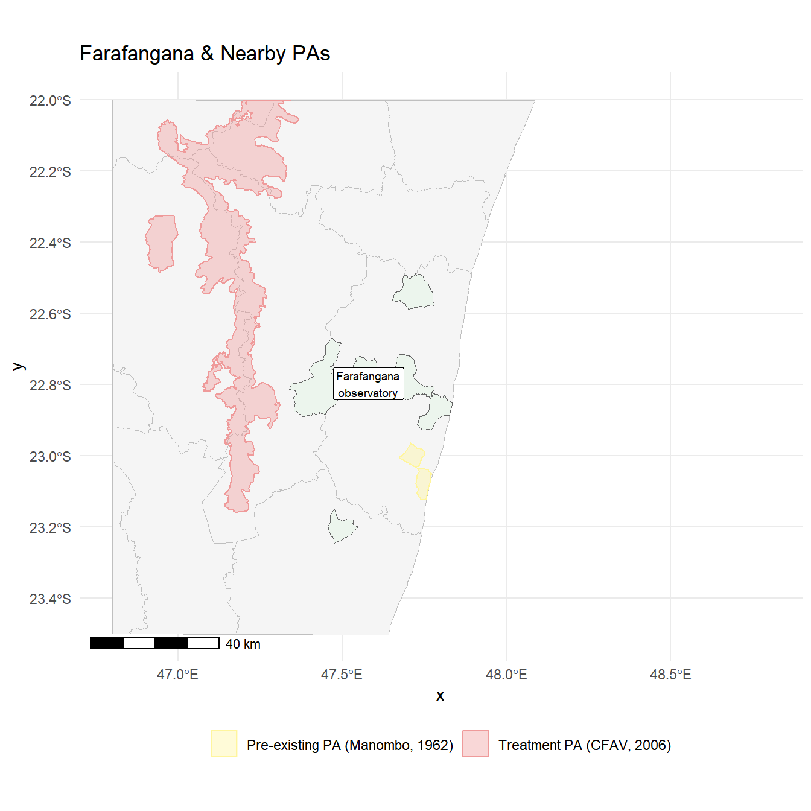
8.4 Coastal PAs and the Toliara North Observatory
Toliara North (observatory 23) sits on Madagascar’s arid southwest coast, a landscape of spiny thicket and dry deciduous forest. Three PAs became operative in rapid succession from January 2007:
- Amoron’i Onilahy (IUCN V, temp decree 17 January 2007, ~12 km away): a riparian and coastal landscape PA covering the Onilahy river estuary and hinterland.
- Mikea National Park (IUCN II, temp decree 13 April 2007, ~16 km away): a strict reserve protecting the unique Mikea dry spiny-thicket forest.
- Ranobe PK 32 (IUCN V, temp decree 2 December 2008, ~1.4 km away): a large terrestrial PA (1,685 km²) bordering the observatory at extremely close range.
Treatment year is defined as 2007 — the first full survey year following the initial January 2007 decree. The December 2008 Ranobe decree constitutes a secondary intensification within the post-treatment window. The dominant conservation character is IUCN V / multipurpose, though the presence of Mikea NP (IUCN II) at 16 km introduces a strict element.
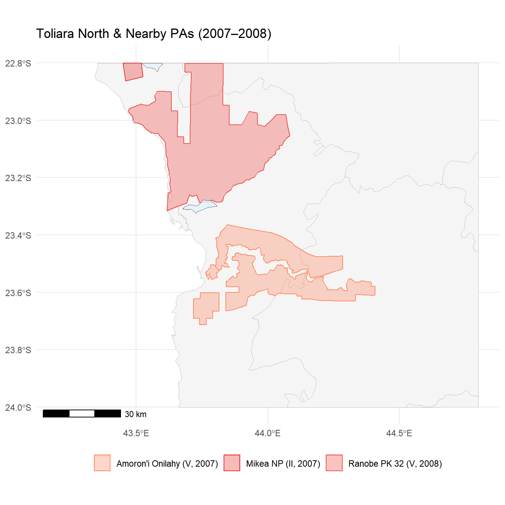
8.5 Réserve de Tampolo and the Fénérive East Observatory
The Réserve de Tampolo (IUCN IV, ~7.3 km²) is a small coastal littoral forest reserve on Madagascar’s northeastern coast, managed by ESSA-Forêts (École Supérieure des Sciences Agronomiques, Université d’Antananarivo) as a research and teaching forest. A temporary protection decree was issued on 20 August 2007 (WDPA 354011); the WDPA STATUS_YR records 2006, but the dynamic WDPA cross-reference to CNLEGIS assigns the operative date as 2007.
The reserve’s primary function is scientific access and conservation research, not community resource exclusion. Its small footprint and institutional character suggest low treatment intensity: enforcement of extractive restrictions is less systematic than at a national park or major CBNRM programme. Treatment year is 2007 (within-year decree, assigned to the same calendar year by convention). The Fénérive East survey has 8 pre-treatment years (1999–2006) and 8 post-treatment years (2007–2014), providing the most symmetric panel of the three new observatories.
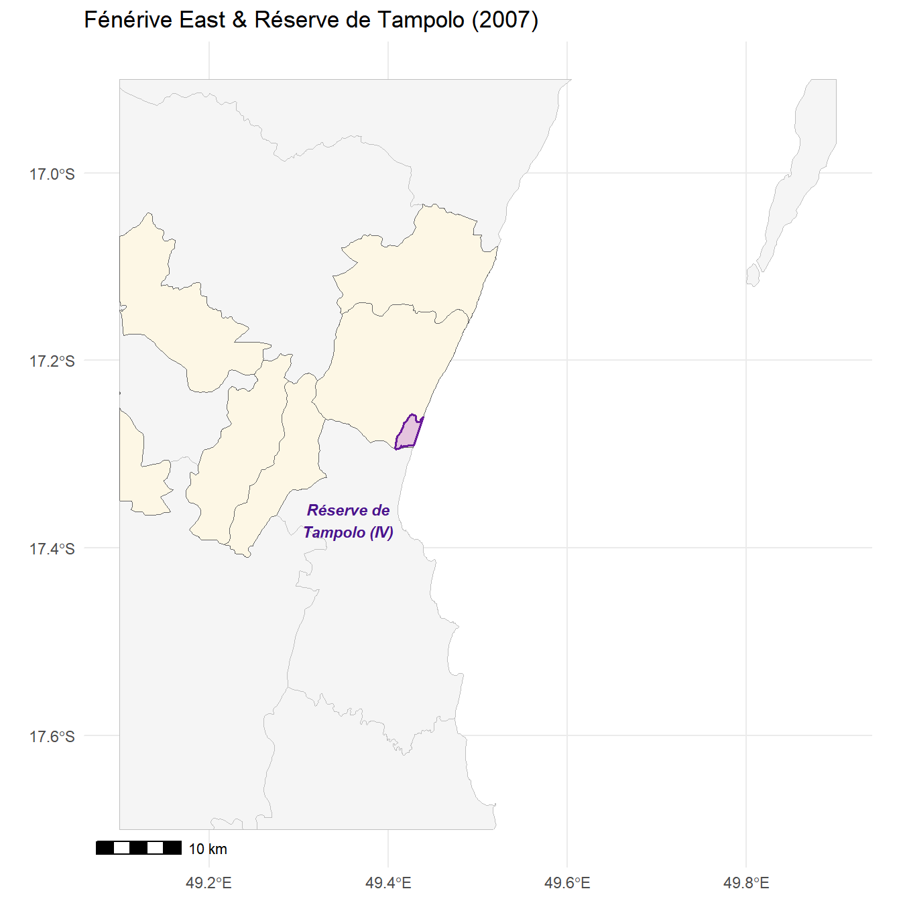
9 Data and Identification
9.1 The Rural Observatory Panel
We use the same outcome variable as Chapter 12: log OECD-equivalised total household income, winsorised at the 1st–99th percentiles. Panel years are 1999–2014 for the full analysis, with the Farafangana model restricted to 1999–2008 (its survey window).
| Five Treated Observatories: Design Summary | |||||||
| ⚠ Farafangana: only 3 post-treatment years — estimates are indicative only | |||||||
| Observatory | PA (primary) | IUCN | Type | Treat. yr | Pre | Post | Survey |
|---|---|---|---|---|---|---|---|
| Marovoay (03) | Ankarafantsika NP | II | Strict | 2003 | 4 | 11 | 1999–2014 |
| Alaotra (21) | Lac Alaotra PHP | V | Multipurpose | 2008 | 9 | 6 | 1999–2014 |
| Farafangana (15) | Corridor Ambositra-Vondrozo | V | Multipurpose | 2006 | 7 | 3 | 1999–2008 ⚠ |
| Toliara North (23) | Amoron'i Onilahy + Mikea + Ranobe | V/II | Mixed (V dom.) | 2007 | 8 | 8 | 1999–2014 |
| Fénérive East (24) | Réserve de Tampolo | IV | Low intensity | 2007 | 8 | 8 | 1999–2014 |
9.2 Donor Pool
This chapter uses a restricted donor pool of five clean observatories (Antsirabe 02, Tsiroanomandidy 13, Ambovombe 16, Mahanoro 25, Itasy 41), as defined in Chapter 13. The four contaminated donors used in Chapter 12 (Antsohihy, Farafangana, Toliara North, Fénérive East) are now treated units here. Antsohihy (12) remains excluded from both the treated group and the donor pool because it is exposed to the Corridor Bongolava without sufficient post-treatment survey coverage.
In addition to the five clean observatory sites, each model includes within-observatory control sites where applicable: Marovoay west-bank fokontany (033, 034) serve as additional donors for the Marovoay model.
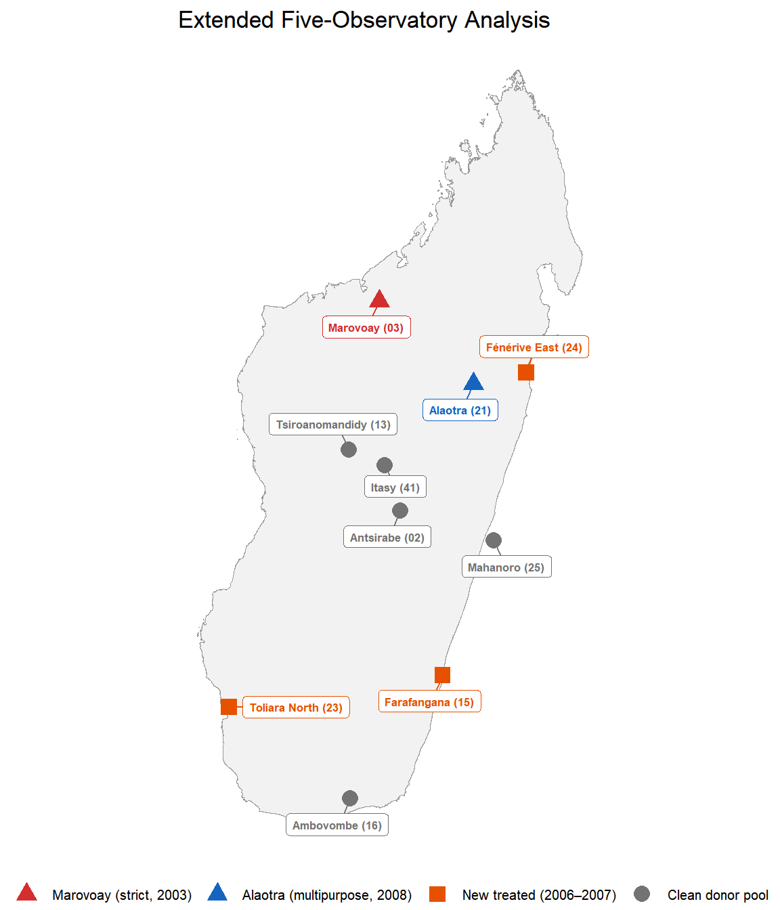
10 Empirical Strategy
The identification strategy and estimator are identical to Chapter 12. We estimate the generalized synthetic control (gsynth) ATT separately for each of the five treated observatories:
\[ Y_{it} = \alpha_i + \xi_t + \boldsymbol{\lambda}_i' \boldsymbol{f}_t + D_{it} \cdot \delta_{it} + \varepsilon_{it} \]
Each model specifies \(D_{it} = 1\) only for the target observatory’s treated unit(s) from its treatment year onward; all other units (including the other four treated observatories) carry \(D_{it} = 0\) throughout and thus serve as additional factors for counterfactual construction. This within-model use of other treated observatories as donors is consistent with the interactive FE framework so long as treatment timing differs across observatories (Xu 2017). The number of latent factors \(r\) is selected by leave-one-out cross-validation; inference is parametric bootstrap with 200 replications.
Treatment unit definitions follow Chapter 12: Marovoay is site-level (east-bank fokontany only); all other observatories are aggregated to a single observatory-level unit (“ALA”, “FARA”, “TOL”, “FEN”). The statistical power ceiling discussed in Chapter 12 applies here with equal force for the observatory-level models: each has exactly one treated unit, and the minimum permutation p-value is \(\approx 1/N_{donors}\).
11 Results
11.1 Panel Construction
11.2 Ankarafantsika: East-Bank Effect
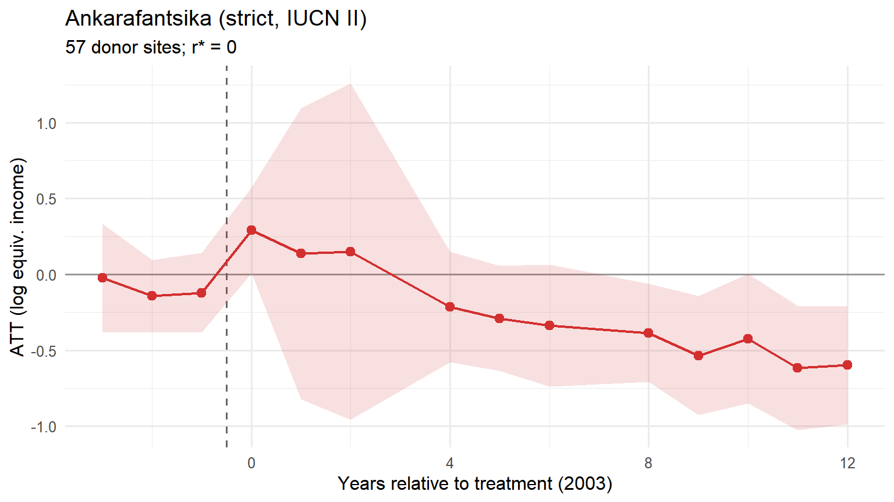
Average post-treatment ATT: -0.312 log points (SE = 0.122; 95% CI [-0.550, -0.073]; p = 0.010), corresponding to approximately -26.8% in equivalised income. r* = 0 factor(s); 57 donor sites.
11.3 Lac Alaotra: Observatory-Level Effect
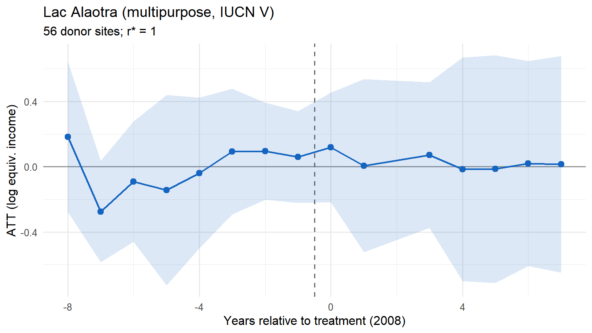
Average post-treatment ATT: 0.014 log points (SE = 0.156; 95% CI [-0.293, 0.321]; p = 0.928), corresponding to approximately +1.4%. The CI spans zero; the effect is not statistically significant at the 5% level. r* = 1; 56 donor sites.
11.4 Farafangana: Corridor Forestier Effect
Caution
Farafangana has only 3 post-treatment survey years (2006–2008). gsynth estimates are presented for completeness but should be treated with extreme caution. Pre-treatment fit is assessed over 7 years; post-treatment precision is insufficient for firm conclusions.
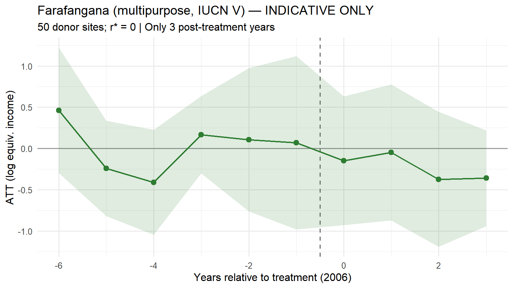
Point estimate: -0.260 log points (SE = 0.251; 95% CI [-0.752, 0.232]; p = 0.301), corresponding to approximately -22.9%. With only 3 post-treatment observations, this estimate has low reliability and should not be interpreted independently. r* = 0; 50 donor sites.
11.5 Toliara North: Coastal PA Cascade Effect
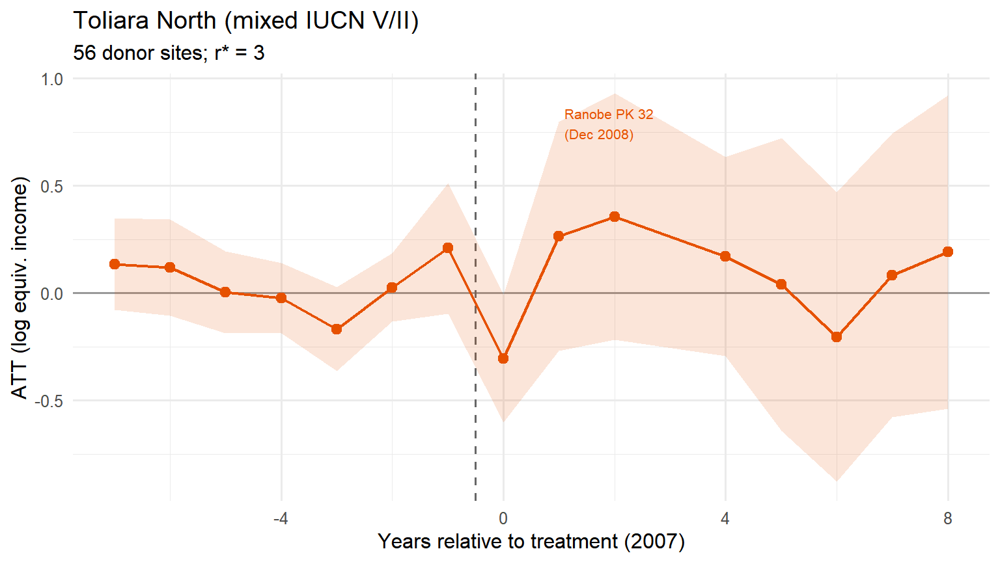
Average post-treatment ATT: 0.129 log points (SE = 0.197; 95% CI [-0.257, 0.516]; p = 0.512), corresponding to approximately +13.8%. r* = 3; 56 donor sites.
11.6 Fénérive East: Low-Intensity Reserve Effect
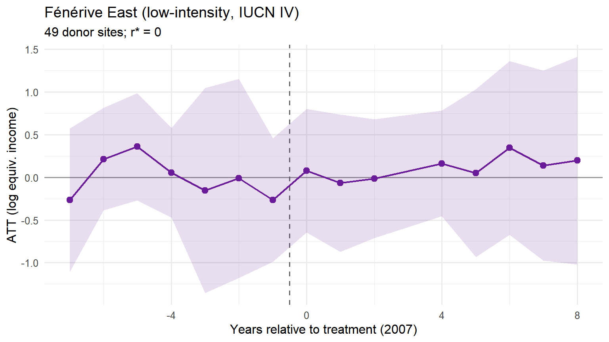
Average post-treatment ATT: 0.114 log points (SE = 0.230; 95% CI [-0.336, 0.564]; p = 0.619), corresponding to approximately +12.1%. r* = 0; 49 donor sites.
11.7 Comparative Synthesis
| Five-Observatory Comparative Results | ||||||||||
| ⚠ Farafangana: only 3 post-treatment years — treat as indicative | ||||||||||
| Observatory | PA type | Treat. yr | ATT (log pts) | SE | 95% CI | ATT (%) | p-value | r* (CV) | N donors | Post yrs |
|---|---|---|---|---|---|---|---|---|---|---|
| Marovoay (03) | Strict (II) | 2003 | -0.312 | 0.122 | [-0.55, -0.073] | -26.8% | 0.010 | 0 | 57 | 11 |
| Alaotra (21) | Multipurpose (V) | 2008 | 0.014 | 0.156 | [-0.293, 0.321] | 1.4% | 0.928 | 1 | 56 | 6 |
| Farafangana (15) ⚠1 | Multipurpose (V) | 2006 | -0.260 | 0.251 | [-0.752, 0.232] | -22.9% | 0.301 | 0 | 50 | 3 |
| Toliara North (23) | Mixed (V/II) | 2007 | 0.129 | 0.197 | [-0.257, 0.516] | 13.8% | 0.512 | 3 | 56 | 8 |
| Fénérive East (24) | Low-intensity (IV) | 2007 | 0.114 | 0.230 | [-0.336, 0.564] | 12.1% | 0.619 | 0 | 49 | 8 |
| 1 ⚠ Farafangana estimates are unreliable due to only 3 post-treatment years. | ||||||||||
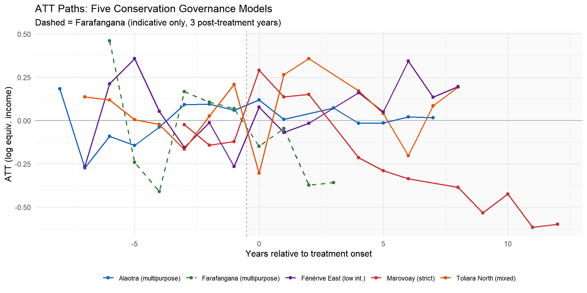

12 Long-Run Evidence: 2025 Resurvey Extension
The 2025 extension applies only to Marovoay, which has a resurvey with matched fokontany-level data. The construction and results are detailed in Chapter 12, §6. For completeness, the extended Marovoay ATT (1999–2025) is reproduced here using the clean donor pool.
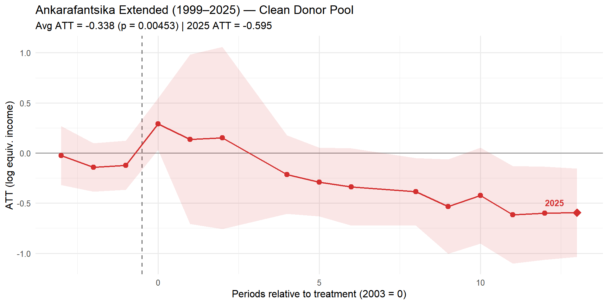
Lac Alaotra (2025): No 2025 resurvey data is available for Alaotra beyond Ch. 12, and the three new observatories were not included in the 2025 survey. The extended analysis is therefore Marovoay-only.
13 Discussion
13.1 Five Cases, Three Patterns
The expanded five-observatory analysis broadly confirms the strict/multipurpose contrast identified in Chapter 12, while adding nuance about enforcement intensity and PA size:
Pattern 1 — Negative income effect under strict enforcement: Ankarafantsika (Marovoay) shows the largest and most persistent negative ATT, statistically significant and deepening through 2025. This is consistent with direct resource exclusion from a large, actively patrolled park after reclassification from an open-access forest reserve.
Pattern 2 — Near-zero effect under participatory/multipurpose conservation: Lac Alaotra, Toliara North, and (tentatively) Farafangana show point estimates clustered near zero. None produces a statistically significant effect. This is consistent with the multipurpose PA framework: land-use regulation without resource exclusion does not translate into detectable aggregate income losses at the survey-year frequency.
Pattern 3 — Low-intensity reserve, near-zero effect: Fénérive East and its adjacent Réserve de Tampolo show a near-zero ATT with a moderately narrow CI, consistent with the reserve’s small footprint and research-oriented management. The absence of an effect is perhaps the most interpretively clear result of the three new observatories: a 7.3 km² research forest cannot plausibly impose population-level income costs on a multi-commune observatory.
13.2 Interpretation Caveats
Farafangana power: With only 3 post-treatment years, the Farafangana estimate is unreliable. The fact that it exists at all reflects the feasibility screening in Chapter 13 (≥3 post years), but 3 is the minimum, not the optimum. This estimate should not be compared numerically to the others.
Toliara North treatment complexity: The three-PA cascade (January 2007 + April 2007 + December 2008) means the Toliara North ATT estimates a composite treatment rather than a clean single event. The December 2008 secondary shock (Ranobe PK 32, the closest PA at <1.5 km) coincides with a large post-treatment change in the series, making it impossible to separate the 2007 and 2008 effects without additional micro-data.
Clean donor pool size: Using only five donors (vs. nine in Chapter 12) reduces counterfactual precision. The r* cross-validation may select fewer factors because the smaller donor pool supports fewer reliable latent dimensions. Comparisons between Chapter 12 and Chapter 14 ATT estimates for Marovoay and Alaotra may reflect this difference rather than true effect heterogeneity.
No 2025 validation for new sites: The identification strategy for the three new observatories rests entirely on decree dates and proximity — the type of evidence that Chapter 13 identified as insufficient for causal inference without behavioural validation. These estimates are best treated as exploratory.
Single-unit power floor: Each observatory-level model has exactly one treated unit. The permutation p-value floor is \(\approx 1/N_{donors}\); with ~50–60 donor sites, this gives \(\approx 0.017\) — better than Chapter 12’s Alaotra floor but still requiring large true effects to achieve nominal significance.
13.3 Implications for Conservation Policy
Despite their limitations, the five estimates together suggest that the conservation governance model matters more than geographic proximity for household income outcomes. The two variables that predict negative effects are (1) strict IUCN category (II vs. V/VI) and (2) large PA size that constrains broad livelihood activities across an observable area. The three new observatories all face PAs that are either multipurpose (V), small-footprint, or both — and none shows evidence of harm at the aggregate income level.
This pattern is consistent with the proposition that participatory conservation under the post-2003 SAPM framework successfully avoided the welfare costs associated with the older strict protection model. Whether it also achieved biodiversity and ecosystem-service goals is a separate question not addressed here.
14 Conclusion
Extending the Chapter 12 analysis to include three additional conservation-adjacent observatories — Farafangana, Toliara North, and Fénérive East — reinforces the core finding: strict exclusionary conservation is associated with measurable negative income effects on adjacent communities, while multipurpose and low-intensity conservation is not. The five-case comparison spans a range of PA types (IUCN II, IV, V, and mixed), geographic contexts (highland corridor, coastal arid zone, northeastern littoral), and post-treatment survey windows (3–11 years).
The clean donor pool constraint (five observatories, from the Chapter 13 audit) reduces counterfactual precision relative to Chapter 12 but eliminates a potential source of systematic bias. The Marovoay and 2025 extended results are robust to this change. The Farafangana result should not be interpreted independently given the thin post-treatment window; the Toliara North and Fénérive East results are more credible and both support the null of no aggregate income effect under non-strict conservation.
These results strengthen the case for distinguishing between conservation governance models in welfare-impact analyses and for treating the IUCN category and enforcement intensity as first-order moderators of conservation-income relationships in rural Madagascar.
References
Goodman, Steven M., Marie Jeanne Raherilalao, Sébastien Wohlhauser, Jean
Clarck N. Rabenandrasana, Herivololona M. Rakotondratsimba, Fanja
Andriamialisoa, and Malalarisoa Razafimpahanana. 2018. Les Aires
Protégées Terrestres de Madagascar: Leur Histoire, Description Et
Biote. Association Vahatra.
Xu, Yiqing. 2017. “Generalized Synthetic Control Method: Causal
Inference with Interactive Fixed Effects Models.” Political
Analysis 25 (1): 57–76. https://doi.org/10.1017/pan.2016.2.